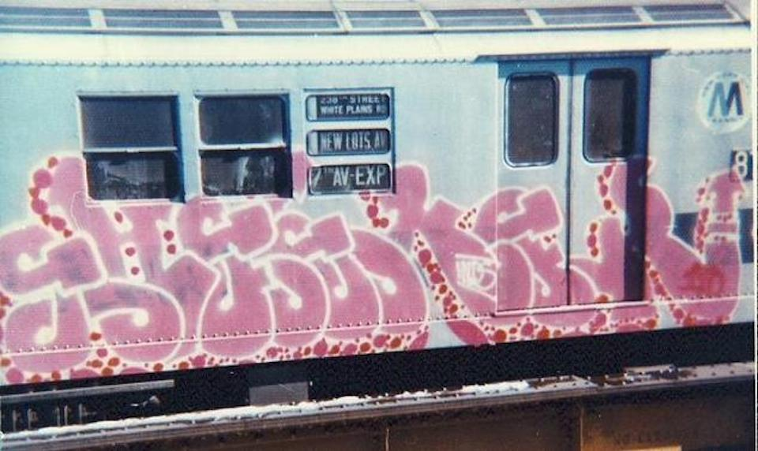
Early piece, 1970s
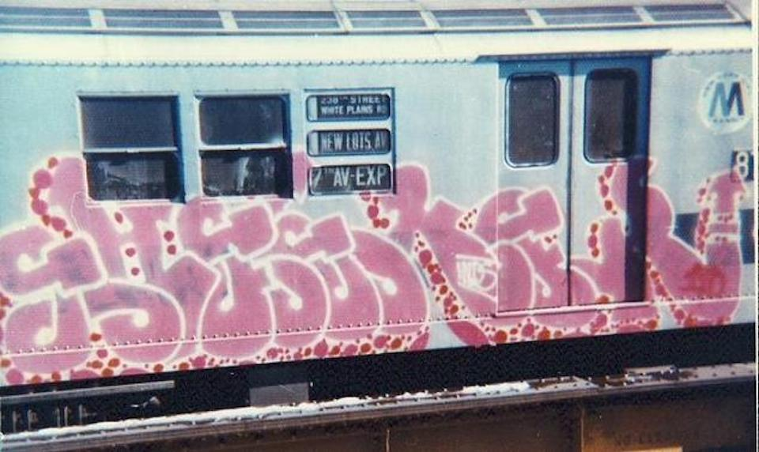
Early piece, 1970s

Fritz Henle Washington Square, Greenwich Village, New York City 1970
New Yorkers roller skate to work on the first Earth Day, April 22, 1970.
via reddit
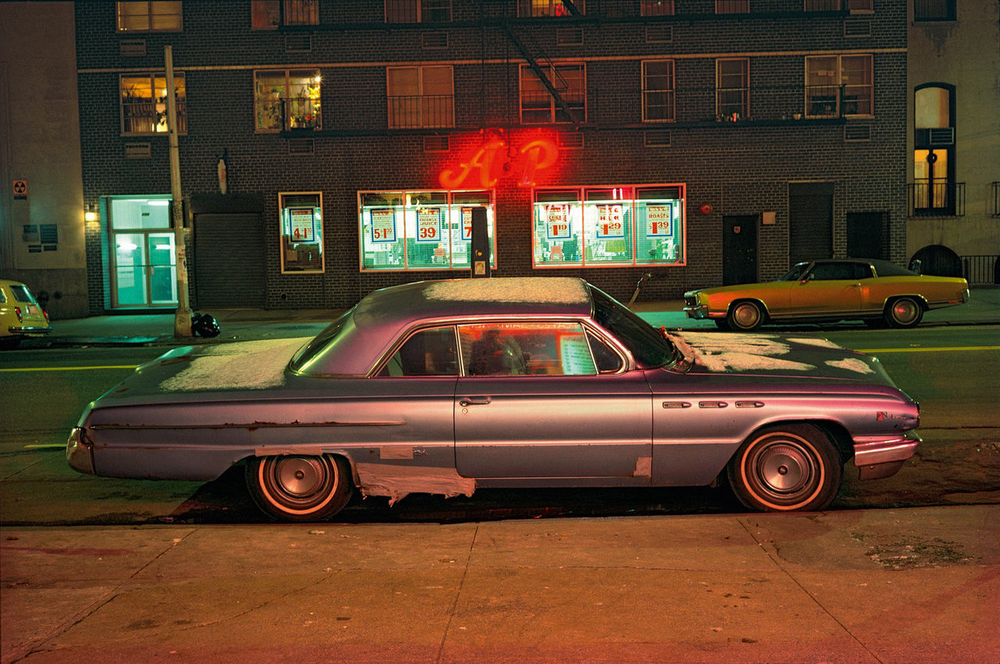
West 14th Street, 1974
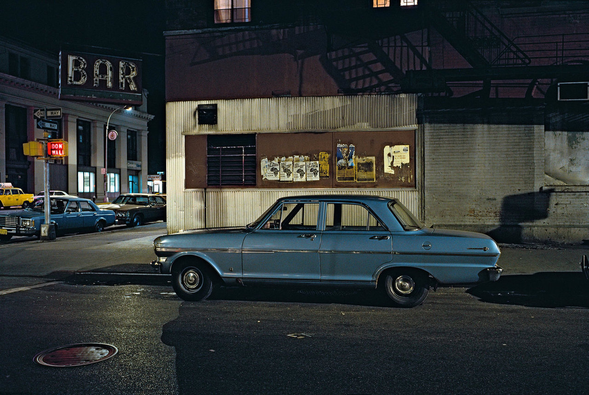
Chelsea 1976
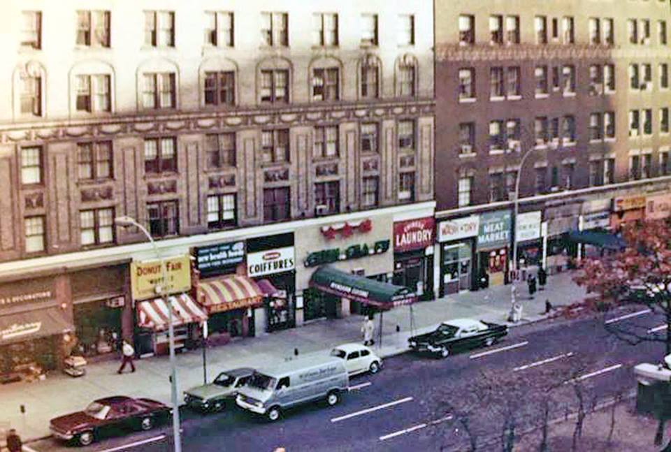
The east side of Broadway, between 91st and 92nd, 1977.
Chun Cha Fu – an amazing Chinese restaurant. My dad used to call it “Fu Manchu”.
Lynn Oliver’s big band performing on 89th Street, 1978

Red Apple on 87th Street. You had to be pretty desperate to shop there, as there were much cleaner supermarkets a couple of blocks away.
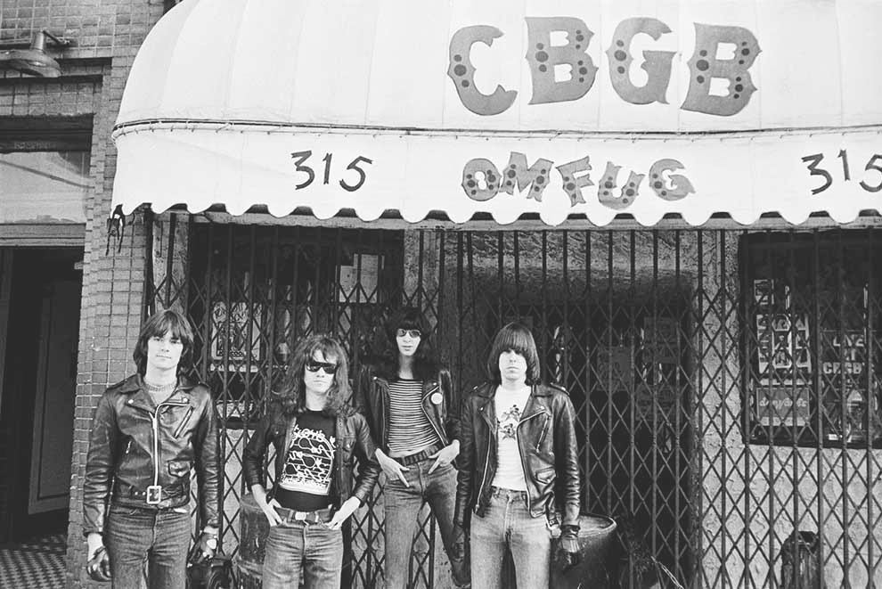
The Ramones outside CBGB
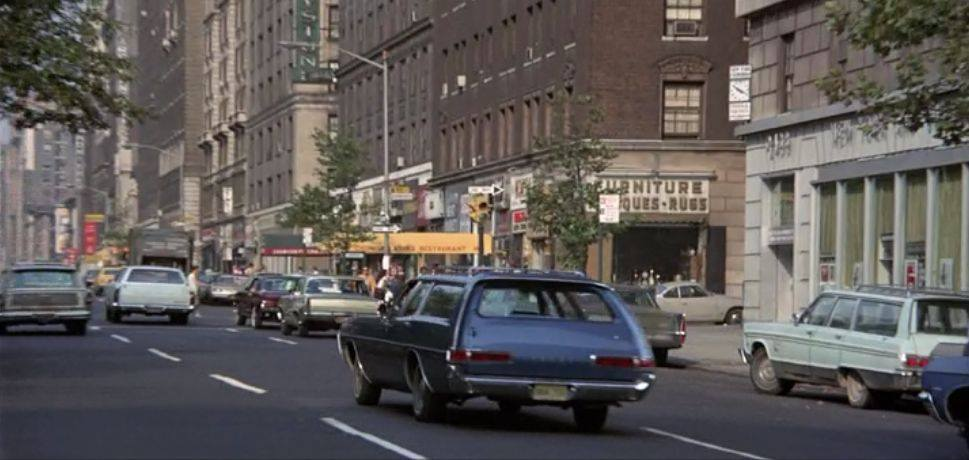
Broadway, 1970, looking uptown at 90th Street

89th and Broadway, looking East

Royale Pastry on 72nd Street
The tiniest store in all Manhattan. Johnny’s. I used to buy some records and old Penthouse mags from him.


Broadway between 91st and 92nd, 1970s

89th Street, 1970s
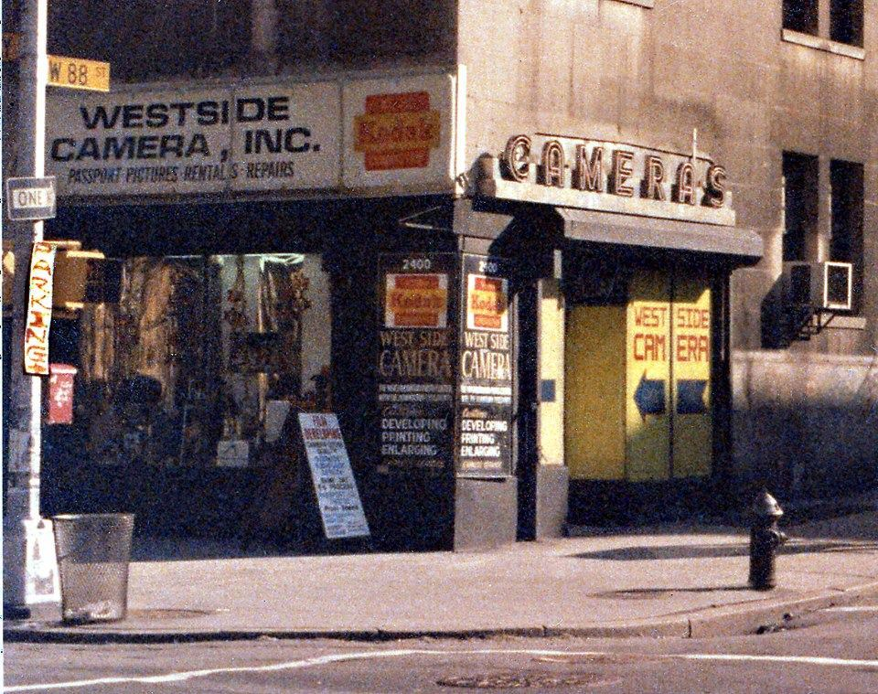
88th and Broadway, 1982
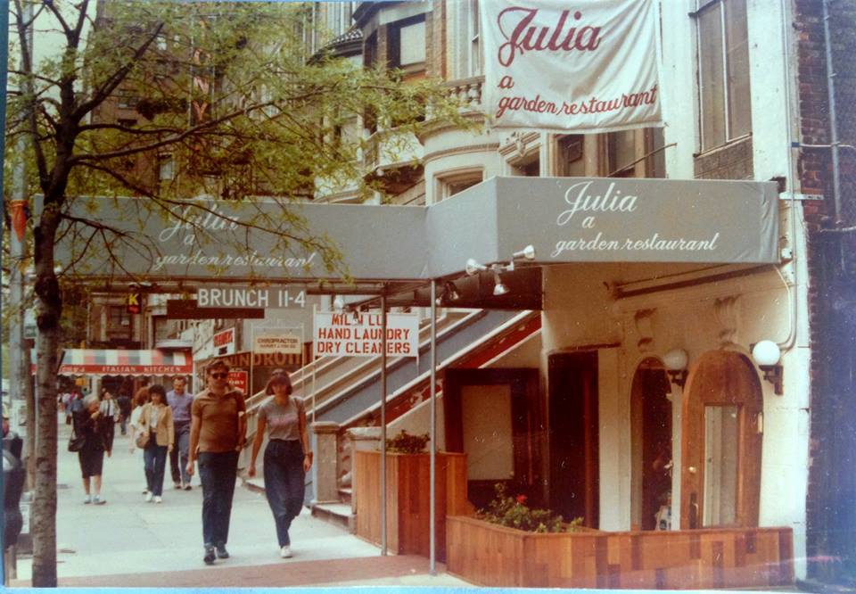
79th Street, between Broadway and Amsterdam, 1980s

Pandemonium

Shakespeare & Co, 1993

Brownsville, 1972
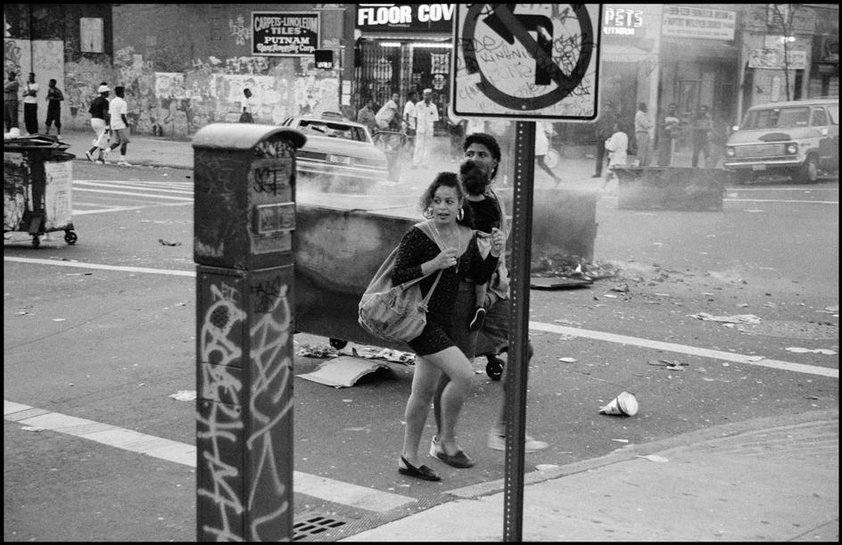
Crown Heights, 1991

It’s a real pleasure to serve you.
Glad I could spread some nostalgia!

West End Ave and 72nd Street in the 80s. There was a little convenience store right there – the only commercial shop on WEA.

The Burger Joint

90th and Broadway, 1981

Broadway and 83rd, 1970s
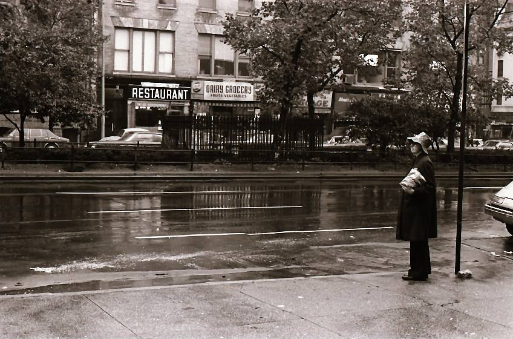
Broadway and 79th, looking West and North, 1976
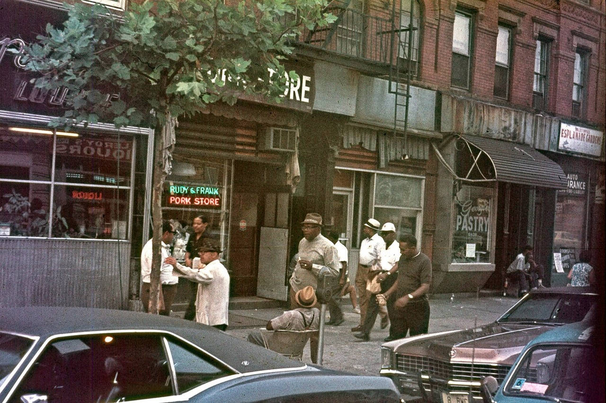
Amsterdam Ave, between 144th and 145th, 1971.
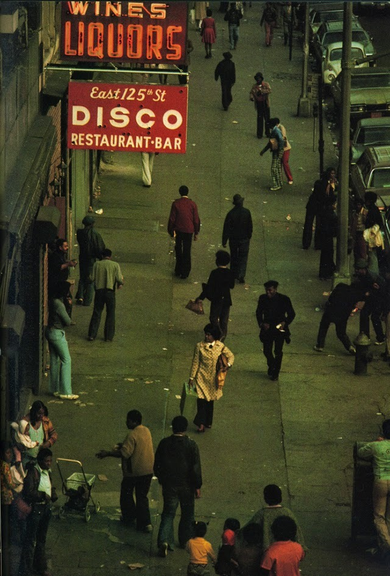
East 125th Street Disco, with easy access to cheap liquor.

hfgl:
I know you miss me blind.

Photo by Louise Egan, ca. 1987
Revolt four ways
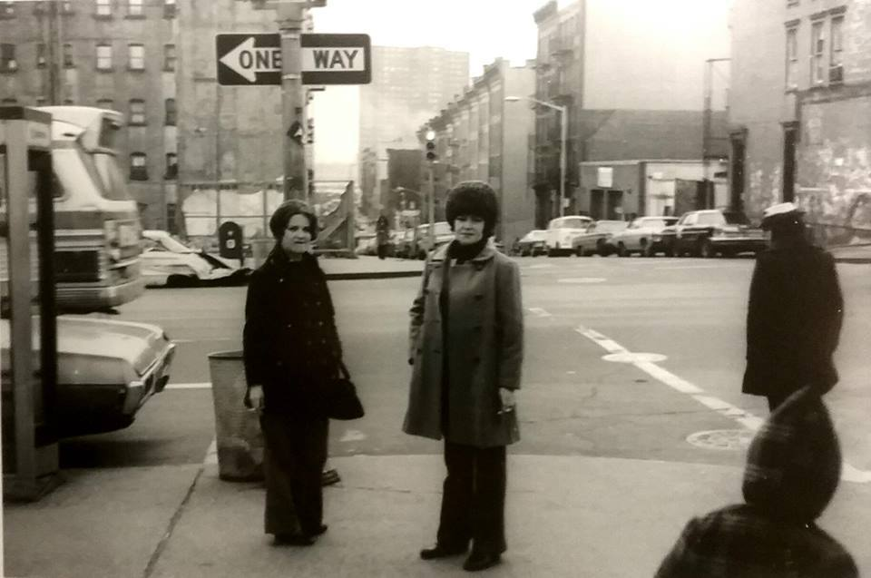
3rd Ave and 95th Street, 1973
Haven’t been to Philly for decades. Nice to know I could go there for a nostalgic fix, though!

Love me.

Anyone else freaked out by that kid? #omen
The Ramones on the subway, t975

Meditating on the edge of Riverside Park, 1971.
If I’m not mistaken, that looks an awful lot like Riverside Drive between 89th and 90th.

Mansplaining on Broadway and 103rd, 1971

Martin Luther King, Jr Memorial March, 1968
NYC Marathon, 1987
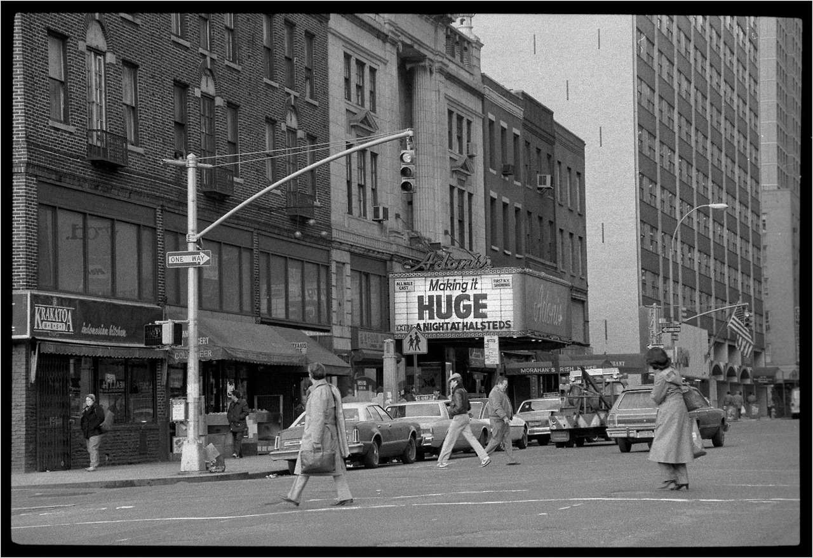
A gay porn theater in Times Square, 1985

Businesses on Whitehall Street, New York City

Sun Ra performing on the Staten Island Ferry, 1968/9 pic by Hideaki Sato